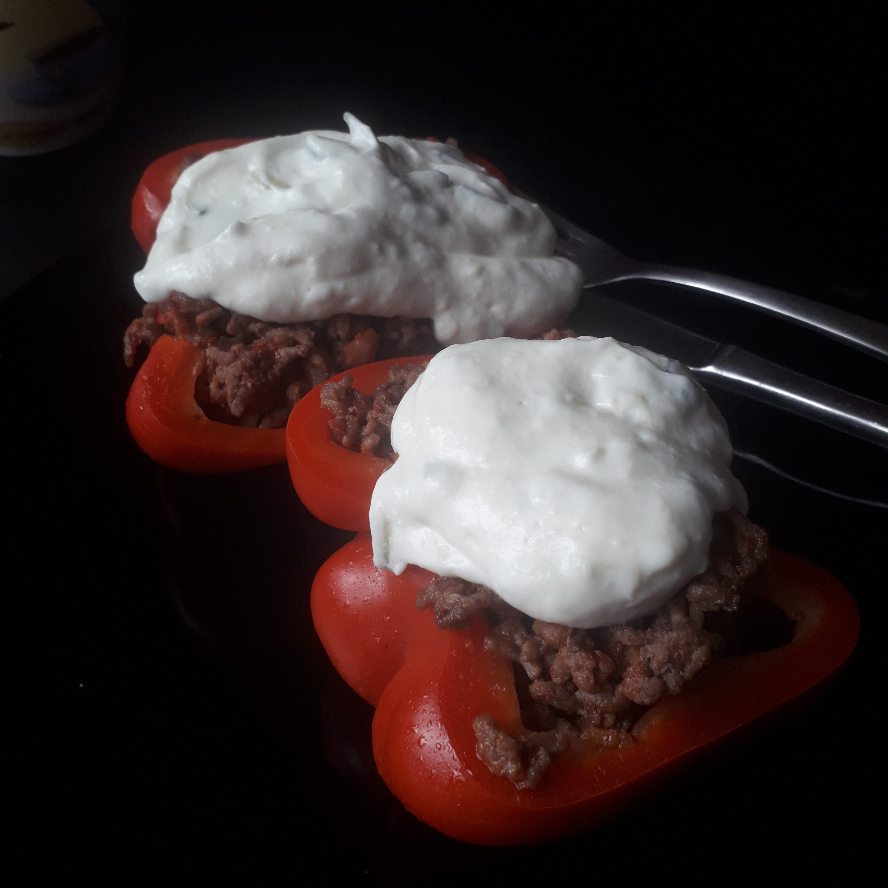

Zutaten für 2 Portionen
- 1 größere Paprika
- 2 Zwiebel
- 1-2 Möhren (je nach Größe)
- Tomatenmark
- 200g Tartar
- Salz & Pfeffer
- fettarmer Tzatziki (evtl. selbstgemacht aus Magerquark)
Zubereitung
Gemüse putzen und schälen, die Paprika dabei in zwei Hälften schneiden, Kerne entfernen damit schön viel Platz ist.
Möhren und Ziebel in kleine Würfel schneiden und bei mittlerer Hitze anschwitzen. Bei fast glasigen Zwiebeln das Tartar hinzu und scharf anbraten. Abschliessend mit einem kräftigen Stoß Tomatenmark ablöschen. Nachträglich salzen und pfeffern.
Das Tartar dann in die Paprika-Hälften geben diese wieder in die Pfanne legen, Deckel drauf und bei geringer Hitze 5-10 Minuten garen, damit die Paprika etwas weicher wird.
Zum Servieren den Tzatziki darauf geben.